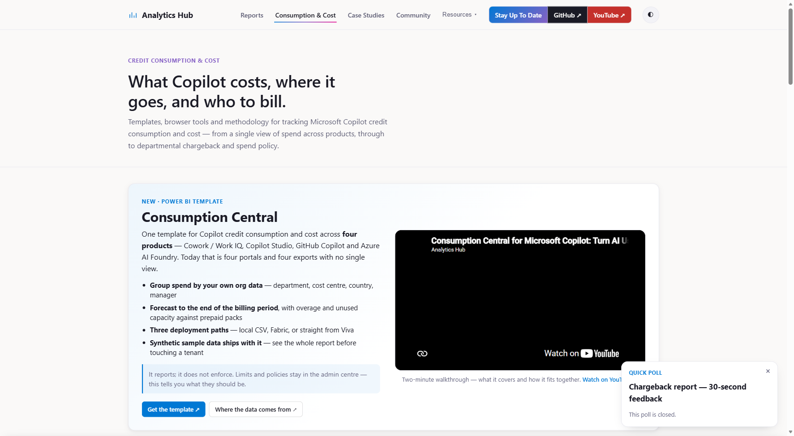
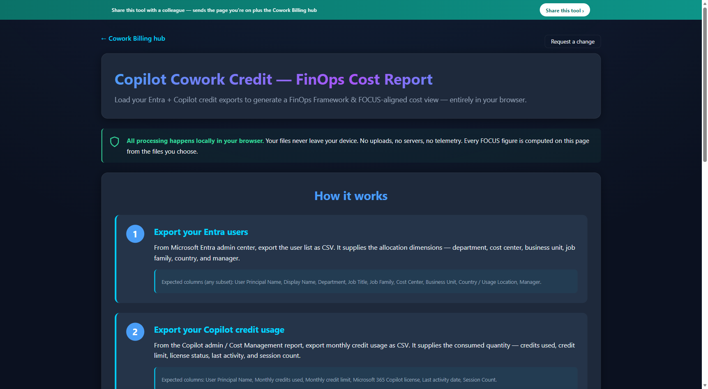
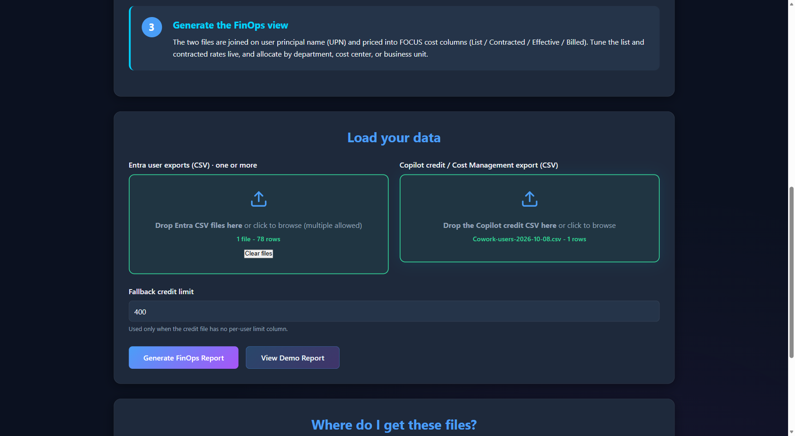
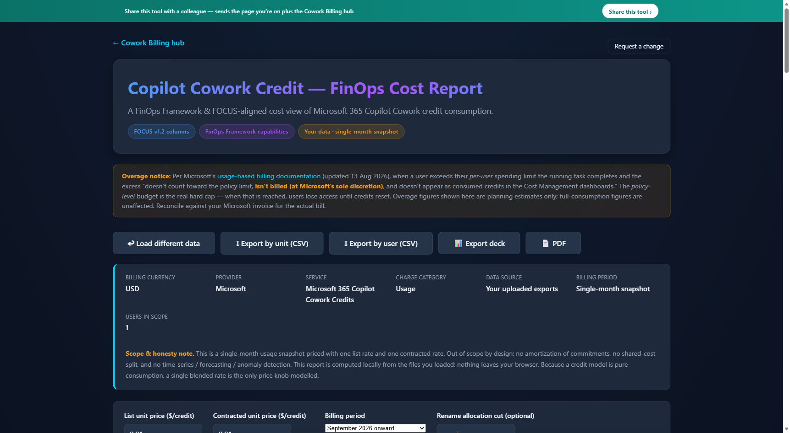
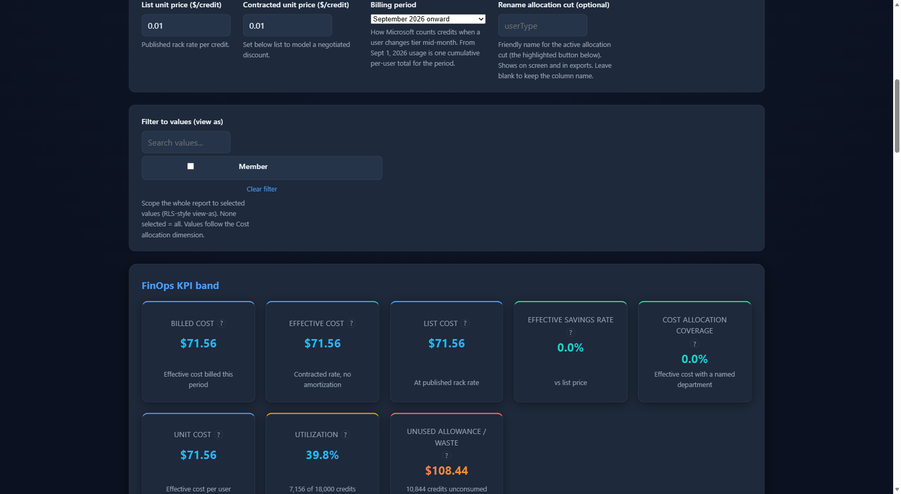

Cowork FinOps Quickstart
Audience: Microsoft 365 administrators, FinOps practitioners, and finance analysts who already have (or can request) Copilot Cost Management and Entra export access.
Prerequisites: permission to obtain each export (see Step 02), an agreed reporting period, and an agreed allocation rule before you circulate any output as a real chargeback.
Scope & limitations:
- This is an independent companion walkthrough, not official Microsoft documentation — it covers a community-built browser tool and two public GitHub Power BI templates linked from Microsoft's Analytics Hub page, with no Microsoft endorsement of accuracy.
- Suitable for: consumption analysis, showback, allocation modeling, and pilot/internal review.
- Not sufficient by itself for: invoice reconciliation, general-ledger posting, or a disputed chargeback — those require your actual Microsoft billing record.
Privacy: CSV parsing and report calculations run locally in your browser. The hosted Analytics Hub tool also loads Microsoft Clarity analytics and records fixed-name usage events when data is loaded, reports are generated, and results are exported. Local processing does not mean the hosted page has no telemetry.
Generated reports render display names and organizational attributes into the page. Before using identifiable production data, review the deployed page, its event instrumentation, consent behavior, and Clarity masking requirements. Denying analytics cookie storage does not establish that all telemetry is disabled. This guide has not verified the project's masking settings or whether rendered identifiers reach analytics payloads.
Use synthetic or approved data for evaluation. For sensitive or regulated data, obtain your organization's approval for the hosted tool or use a reviewed local copy with analytics dependencies removed or blocked. Simply downloading the page does not disable its external scripts.
How to read the numbers
The report uses selected cost terms from the FinOps Open Cost & Usage Specification (FOCUS) — List, Contracted, Effective, and Billed cost — but it computes those columns from credits × a rate you configure, not from your invoice. Keep these three concepts separate:
| Term | What it actually is | Safe to use for |
|---|---|---|
| Consumed credits | Operational usage pulled straight from the Copilot Cost Management export | Adoption, policy, and usage trend analysis |
| Modeled cost (shown as "List/Contracted/Effective" cost) | Credits × the list or contracted unit price you type into the rate fields | Planning and illustrative allocation — not a certified FOCUS dataset |
| Estimated billed cost | The report's "Billed cost" figure — still a modeled estimate, not pulled from your invoice | Directional planning only; reconcile against your actual Microsoft invoice before using it financially |
The "FOCUS v1.2 columns" badge is the upstream tool's stated terminology target, not a claim that v1.2 is the latest specification or that the dataset is a certified, fully conformant FOCUS export. The browser tool doesn't model prepaid-commitment amortization or shared-cost allocation. Treat every dollar figure on the page as a planning estimate until reconciled against your bill.
What you end up with
| Artifact | Where it comes from | Use it for |
|---|---|---|
| FinOps Cost Report (on-screen) | Browser tool, generated live from your two CSVs | FOCUS-aligned modeled cost view, allocation by department/cost center (see "How to read the numbers" above) |
cowork-finops-by-<dimension>-<date>.csv | "Export by unit" button | Cost rolled up by your chosen allocation dimension; the filename follows its label, for example cowork-finops-by-department-<date>.csv |
cowork-finops-by-user-<date>.csv | "Export by user" button | Per-person detail for showback, illustrative chargeback, or audit |
Cowork_FinOps_Report.pptx | "Export deck" button | Five-slide leadership summary (KPI, chargeback chart, allocation table, methodology) |
Cowork_FinOps_Report.pdf | "PDF" button | Image-based snapshot of the on-screen report (see Step 06 for a lighter-weight alternative) |
Power BI templates (.pbit, two template families) | GitHub repos, see Step 07 | Chargeback/consumption modelling using the selected variant's inputs and refresh method |
01Start at the Cowork Billing hub
Everything lives off one page: microsoft.github.io/Analytics-Hub/cowork-billing. It lists the Power BI templates (Consumption Central, Cowork Chargeback) and the no-install browser tools (Chargeback, FinOps & FOCUS, ROI Model, Policy Helper).

This walkthrough uses the FinOps browser tool first (Steps 02–06); the Power BI templates are covered in Step 07 once you know what data they need.
02Confirm your export format, then pull your two files
The FinOps tool expects exactly these two exports — and specifically the Copilot Cost Management consumption export, not a different Copilot usage report (Microsoft also ships other Copilot usage views, such as the Viva Insights consumption/AI cost dashboard, with their own schemas; don't substitute one for the other without checking column names first).
| Export | Where | Access guidance | Gives you |
|---|---|---|---|
| Entra users | Entra admin center → Identity → Users → All users → Download users | Microsoft documents downloads for both standard and administrative users. Confirm the access available in your tenant before requesting additional privileges. | Display name and UPN plus whichever organizational attributes your tenant's export includes |
| Copilot credit usage | Microsoft 365 admin center → Copilot → Cost management → Consumption → Users view → Export CSV | Current Cost Management guidance lists AI Reader, Global Reader, License Administrator, and other supported reader-based roles for viewing consumption dashboards and reports. Use the least-privileged supported access and confirm export availability in your tenant. | The supported layout has one row per user, with credits used, credit limit, license status, last activity, and session count. Confirm these columns before loading; don't use the default Policies view export. |
Not every organizational attribute is guaranteed. Display name, UPN, job title, department, and country are typically present in a standard Entra users export. Cost Center, Business Unit, Job Family, and Manager may need additional attribute selection in the export experience or enrichment from an HR/org system — verify those columns exist and are populated before you rely on them for allocation.
03Load both files into the FinOps report
Open the tool and drop each file in its own zone — Entra export on the left, Copilot credit export on the right. The Generate FinOps Report button stays disabled until both are loaded.


The Fallback credit limit applies only when the tool finds no recognized per-user limit column. If you need it, enter an approved per-user allowance, not the overall spending-policy budget. The default 400 is a tool setting, not evidence of your tenant's configured allowance. If a recognized limit column exists, the fallback is ignored: blank or zero cells are treated as zero allowances and can inflate illustrative overage. Review those rows before using the results.
Large exports: browser performance depends on file size, row count, browser, and device resources; this guide establishes no tested capacity threshold. Evaluate representative approved data before adopting the workflow. For recurring reporting, consider a Power BI variant in Step 07 and confirm its own prerequisites and dataset limits.
04Click Generate and read the report
The tool matches User Principal Names (UPNs) locally after trimming leading/trailing whitespace and ignoring letter casing. Domain changes, email aliases used instead of UPNs, and missing Entra records can still prevent a match. This is the tool's matching key, not a platform-wide identity standard.
Allocation behavior: credit rows with a nonempty UPN but no Entra match remain in the unfiltered report; missing organizational attributes are grouped as Unknown, not silently removed from totals. Entra users without credit rows are omitted, and credit rows without a UPN are skipped. Review Unknown groups and compare source credits to the unfiltered report total before applying any entity filter.
Coverage KPI: the current implementation calculates allocation coverage from users with a populated Department value other than Unknown, even when another allocation dimension is selected. Check blanks and Unknown groups in your chosen dimension separately; a populated Cost Center alone does not establish department coverage.
The page then renders a FOCUS-aligned modeled cost view: scope strip, live list/contracted rate controls, KPI cards, allocation dimensions and filters, rate comparisons, and methodology notes. These matching and coverage details were checked against the deployed JavaScript on October 28, 2026; recheck them if the upstream tool changes.


Read the overage notice on the page. Microsoft's current documentation states that qualifying per-user overage from a running task can, at Microsoft's sole discretion, be excluded from policy-limit consumption, not billed, and not shown as consumed credits in Cost Management — this is current behavior, not a contractual guarantee, and the report cannot reconstruct unrecorded overage from a credit export. The policy-level spending limit is the governing budget control for a given spending policy, but don't present it to Finance as an invoice-grade hard ceiling — in-flight work and enforcement timing mean dashboard consumption doesn't map 1:1 to billed usage. Always reconcile the report's "Billed cost" figure against your actual Microsoft invoice before treating it as a financial number.
05Validate before you trust the report
Before you circulate any allocation or chargeback figure, check these in the on-screen report and your source files:
- Confirm the reporting period the credit export actually covers — in the Microsoft 365 admin center's Cost Management > Consumption tab, exported reports are a point-in-time snapshot while the on-screen dashboard keeps retrieving live data, so exported and dashboard counts can temporarily differ. Know which one you pulled.
- Record total usage rows and distinct people in the source export before comparing to what the tool shows.
- Check unmatched credit UPNs, including domain/alias mismatches or missing directory records. Letter casing and leading/trailing whitespace are normalized. Unmatched usage remains under Unknown; Entra-only users are omitted. Separately count credit rows with no UPN, which the tool skips.
- Review blank Department / Cost Center / Business Unit values as Unknown groups in the selected allocation dimension. The coverage KPI uses Department, not the active dimension, so verify your chosen cut independently.
- Watch for duplicate rows if your credit export spans multiple services or dates.
- If anyone changed security groups or spending policy mid-period, confirm their usage is still attributed the way you expect.
- For historical reporting, Microsoft documents that the policy view shows the current configured spending limit, even when historical usage is selected. Confirm the limit applicable to your analysis rather than assuming today's setting applied throughout the period.
- Reconcile total imported credits in the tool against the total in your source CSV before trusting any allocation.
- Don't post a chargeback until unmatched and unallocated usage has an approved treatment. Retain Unknown usage as a separate reconciliation category if it cannot be assigned; document any approved reassignment or exclusion rather than silently dropping it.
06Export the artifacts you need
The toolbar above the report body has five actions: one to load a different dataset, and four exports.
Export by unit and Export by user are CSV, Export deck is a five-slide .pptx built with PptxGenJS, and PDF is an image-based snapshot of the live page via html2canvas + jsPDF (not a conventional, text-searchable PDF).Because the PDF captures the live report at 2x scale as an image, the resulting file can be large (tens to 100+ MB for a report with a long allocation table) and its text isn't selectable. If you need numbers for analysis, use the two CSV exports instead; if you need a smaller, text-searchable PDF for sharing, your browser's own Print → Save as PDF on this page will generally produce a much lighter file.
Keep the qualifications with the exports: upstream files can retain labels such as Billed cost, Chargeback $ (overage), and Budget cap. This guide does not rename those fields or change the tool's calculations. Explain them as modeled cost, illustrative over-allowance allocation, and a configured modeling allowance — not an invoice amount or an enforced spending control — when sharing an output.
07Optional: go deeper in Power BI
The browser tool is a fast first read and a single snapshot. For recurring, refreshable reporting, open the Power BI template that matches your goal — the two template families expect different inputs, so don't assume one set of CSVs works for both:
- Cowork Chargeback (GitHub) — use for departmental showback/chargeback: billing-model comparison (pay-as-you-go, prepaid, hybrid), prepaid pool allocation, per-user watchlist, row-level security, FOCUS cost view. Its
Cowork Chargeback - CSV.pbitvariant reads the same Entra + Copilot credit exports from Step 02; itsCowork Chargeback - Direct Query.pbitvariant connects live to Viva Insights instead and needs no CSVs. - Consumption Central (GitHub) — use for a cross-product view spanning Cowork/Work IQ, Copilot Studio, GitHub Copilot, and Azure AI Foundry. It uses its own data-source setup (local CSV, Fabric, or live Viva Direct Query, per its
1. Local CSV/2. Fabric/3. Viva Directfolders) — follow that repo's own README/data-sources instructions rather than assuming the Step 02 exports are sufficient on their own; it ships with synthetic sample data so you can review the full report before pointing it at a tenant.
Notes & methodology
- FOCUS-aligned terminology: List / Contracted / Effective / Billed cost labels, same vocabulary as the sibling Chargeback tool — see "How to read the numbers" above before treating any of these as invoice-grade.
- Showback, as this tool implements it: the full effective cost of consumption attributed to a unit, with no financial transfer. Chargeback, as this tool implements it: over-allowance credits × contracted rate — one possible organizational allocation policy, not a Microsoft billing definition or the only valid chargeback method. Other models (full consumption, fixed allocation, blended) are equally valid; this tool only computes the overage-basis one.
- The browser tool analyzes the supplied snapshot without amortization, forecasting, or anomaly detection. Check the selected Power BI variant's documentation for its supported forecasting, allocation, and cost-modeling features; don't assume every variant adds each capability.
- Both CSV exports are required; the tool will not generate a report from Entra data alone or credit data alone.
- Questions or feedback on the methodology: copilot-roi-advisory-team-gh@microsoft.com (Microsoft's Copilot ROI Advisory team, who own the upstream Analytics Hub tool — not the author of this companion page).